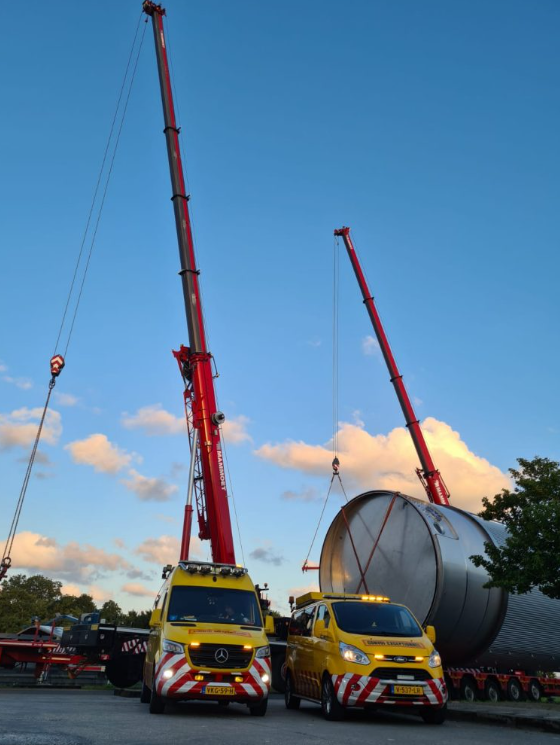

Lors d'une étude de parcours, nous analysons l'ensemble des itinéraires que votre transport exceptionnel doit emprunter. Nous vérifions notamment les virages, rond-points, hauteurs libres, largeurs, ponts, tunnels et restrictions locales. Sur la base de cette analyse, nous déterminons si le transport peut être effectué en toute sécurité et en conformité avec la loi.
Si nécessaire, nous proposons des itinéraires alternatifs, accompagnons la demande d'autorisations locales et assurons la signalisation et le guidage adéquats.
